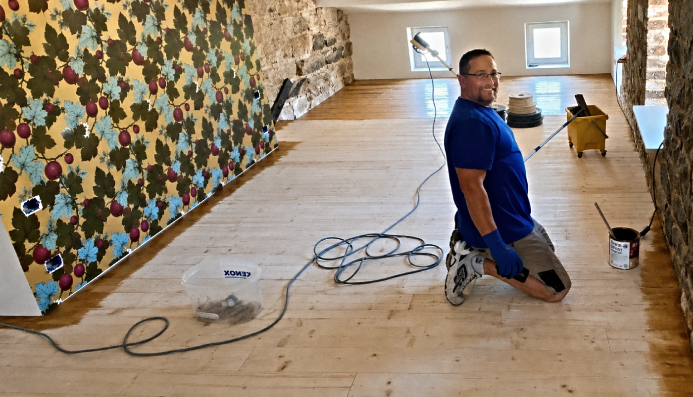
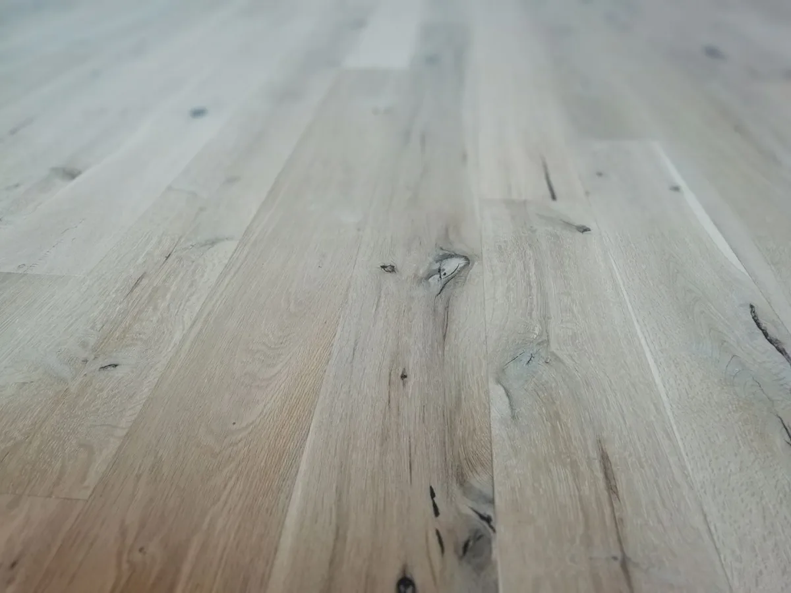

Posa
Massello, prefinito, plance e pavimenti a disegno. Posa incollata, inchiodata o flottante, calibrata sull'ambiente e sul sottofondo per un risultato stabile e duraturo.

Maestro artigiano del parquet · in tutta Italia
Da oltre trent'anni Antonio Citriniti progetta, posa e rifinisce pavimenti in legno in tutta Italia, con particolare attenzione al Centro-Nord. Ogni cantiere è seguito da vicino, dalla prima misura all'ultima mano di finitura.
La garanzia di un esperto
Antonio Citriniti opera da oltre trent'anni nel settore dei pavimenti in legno. Segue personalmente ogni lavoro — dalla scelta del legno al controllo dei sottofondi, dalla posa alla finitura — coordinando da vicino ogni fase del cantiere, anche quando lavora con collaboratori di fiducia. La regìa, e la responsabilità del risultato, restano sempre le sue.
Non è solo questione di estetica. La posa è l'operazione più importante nella realizzazione di un pavimento in legno, e da questa dipende circa il 70% del risultato. Per questo ogni progetto inizia con un sopralluogo attento e la misurazione dell'umidità — dell'aria, del massetto e del legno — prima ancora di posare il primo elemento.
Le lavorazioni
Massello, prefinito, plance e pavimenti a disegno. Posa incollata, inchiodata o flottante, calibrata sull'ambiente e sul sottofondo per un risultato stabile e duraturo.
Riportiamo a nuova vita i pavimenti esistenti. Dalla levigatura dipende gran parte dell'aspetto finale: curiamo ogni passaggio, perché un errore qui non si maschera con la finitura.
Verniciatura, oliatura o ceratura, scelte in base all'uso degli ambienti. Finiture all'acqua per un legno protetto, dall'aspetto naturale e sano da vivere fin da subito.
Controllo dei sottofondi, misurazione dell'umidità e sopralluogo per definire il preventivo. Ascoltiamo le tue esigenze e ti consigliamo la soluzione più adatta.
Tipi di posa e disegni
La galleria
Una selezione di pose e restauri realizzati da Antonio. Tocca un'immagine per ingrandirla.
I materiali
Proponiamo una varietà di essenze selezionate per durare nel tempo e per adattarsi a ogni ambiente — dai toni caldi e avvolgenti alle venature più sobrie e contemporanee. Ti guidiamo nella scelta in base alla luce, all'uso degli spazi e allo stile della casa.
Privilegiamo legni e materiali di provenienza responsabile: un pavimento bello deve poter durare una vita. E con il tempo migliora — a contatto con luce e aria il legno si scalda e si uniforma nel tono, rivelando il suo carattere.
Essenze adatte a bagni, cucine e impianti di riscaldamento a pavimento.
Toni e venature che evolvono nel tempo, in modo autentico.
Materiali scelti pensando alla durata e all'ambiente.
Sostenibilità
Mettiamo attenzione all'ambiente in ogni fase del lavoro: privilegiamo finiture e adesivi all'acqua, a bassissime emissioni, per un cantiere più pulito, con meno odori e un pavimento sano da vivere fin dal primo giorno.
Scegliamo legni provenienti da fonti gestite in modo responsabile e selezioniamo con cura materiali e fornitori: un pavimento bello deve poter durare una vita, nel rispetto della tua casa e dell'ambiente.

Zona servita
Seguiamo cantieri in tutta Italia, con particolare attenzione alle regioni del Centro-Nord. Per i progetti più impegnativi raggiungiamo volentieri anche zone più distanti: parlane con noi e troveremo il modo di esserci.
Domande frequenti
Non trovi quello che cerchi? Scrivici su WhatsApp, rispondiamo volentieri.
Entrambe le cose. Possiamo occuparci della fornitura del materiale oltre che della posa, proponendoti soluzioni complete; oppure lavorare sul pavimento che hai già scelto o acquistato. Come preferisci.
No: sopralluogo e preventivo sono gratuiti e senza alcun obbligo. Veniamo a vedere gli ambienti, misuriamo l'umidità, controlliamo i sottofondi e ti proponiamo la soluzione migliore. Poi decidi con calma.
Lavoriamo con un'ampia varietà di essenze, dai toni caldi a quelli più sobri e contemporanei, e con tutte le principali finiture — verniciatura, oliatura e ceratura. Ti guidiamo nella scelta in base alla luce, all'uso degli ambienti e allo stile della casa.
Entrambi. Oltre alle nuove pose ci occupiamo di riparazioni, rilamatura e restauro di pavimenti esistenti: spesso, con una levigatura e una nuova finitura, riportiamo a nuova vita un parquet rovinato o ingiallito, senza i costi e i tempi di una sostituzione completa.
Operiamo in tutta Italia, con particolare attenzione alle regioni del Centro-Nord. Per i progetti più impegnativi raggiungiamo volentieri anche zone più distanti: contattaci e troviamo il modo di esserci.
Moltissimo: dalla posa dipende circa il 70% del risultato. Per questo, prima di iniziare, controlliamo sempre tre cose fondamentali — l'umidità dell'aria, quella del massetto e quella del legno.
Sì, scegliendo le essenze e le pose adeguate. In fase di sopralluogo valutiamo insieme la soluzione più stabile per il tuo impianto.
Dipende dalla finitura. Le superfici verniciate non richiedono manutenzione particolare, solo un panno umido per la polvere; le finiture a olio e a cera sono più naturali ma chiedono qualche attenzione in più nel tempo. È normale, infine, che il legno si scaldi e si uniformi nel tono con la luce: fa parte del suo fascino. Ti lasciamo sempre le indicazioni giuste per il tuo pavimento.
Parliamone
Un nuovo parquet o il restauro di uno esistente: scrivici o chiamaci per un sopralluogo gratuito. Cercheremo di capire le tue esigenze e di consigliarti la soluzione migliore.